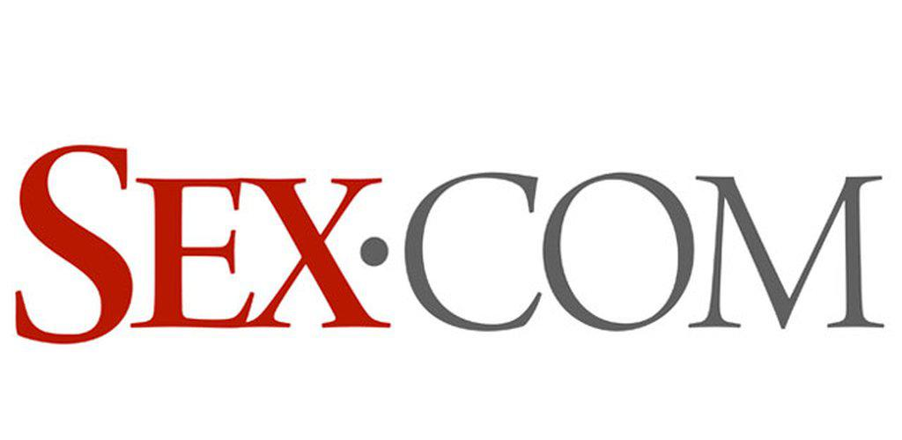
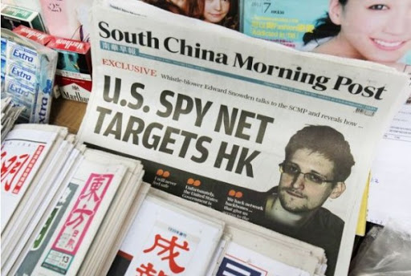
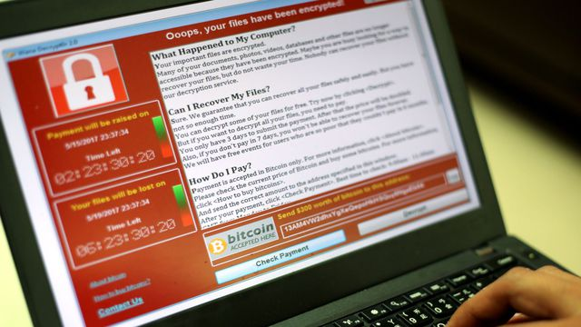

-
Scandale du projet de fichier SAFARI en France qui conduira à la création de la CNIL. Le Système automatisé pour les fichiers administratifs et le répertoire des individus (dont l'acronyme est SAFARI) était un projet d'interconnexion des fichiers nominatifs de l'administration française, notamment par le biais du numéro INSEE.
×
Source : Le monde
Scandale
Le projet est révélé le 21 mars 1974 par le quotidien Le Monde, dans l'article intitulé « Safari » ou la chasse aux Français de Philippe Boucher. Les informations provenaient d'informaticiens du Ministère de l'Intérieur soucieux de la préservation des libertés individuelles.
-
Sex.com a fait l'objet de disputes par tribunal interposé. Cela peut se comprendre par le trafic naturel qu'il peut engendrer.
× Source : 1000Logos
Scandale
Au départ acheté par Gary Kremen, qui ne l'utilisa pas immédiatement, il fut transféré à Stephen M. Cohen, qui installa un nombre considérable de publicités. Grâce au trafic naturel généré, il gagnait entre 50 000 et 500 000 dollars par mois. C'est en 2000 que Gary Kremen remporte son procès afin de récupérer le domaine. Mais Cohen s'échappe au Mexique, et même une fois extradé il refuse de payer les 67 millions de dollars que la Cour lui a ordonné de verser, prétextant ne plus avoir un sou. Finalement, il s'avéra que nombre de sociétés, possédées par ses proches, servaient à cacher les fonds qu'il possédait.
-
Les révélations d'Edward Snowden changent la perception du risque de cyber-espionnage.
× Source : Globservateur
Scandales
À partir du 5 juin 2013, Snowden rend publiques, par l’intermédiaire des médias, des informations classées top-secrètes de la NSA concernant la captation des métadonnées des appels téléphoniques aux États-Unis, ainsi que les systèmes d’écoute sur Internet des programmes de surveillance PRISM, XKeyscore, Boundless Informant et Bullrun du gouvernement américain et les programmes de surveillance Tempora, Muscular et Optic Nerve du gouvernement britannique. Pour justifier ses révélations, il déclare que son « seul objectif est de dire au public ce qui est fait en son nom et ce qui est fait contre lui ». À la suite de ses révélations, Edward Snowden est inculpé, le 22 juin 2013, par le gouvernement américain sous les chefs d’accusation d’espionnage, vol et utilisation illégale de biens gouvernementaux.
-
Cyberattaque mondiale massive WannaCry
× Source : L'express
Scandale
Une vaste attaque informatique a touché au moins 300 000 ordinateurs dans 150 pays, le 12 mai 2017, infectés par le ransomware "WannaCry" ou "WannaCrypt", un virus prenant en otages les données personnelles. Le logiciel malveillant exploite une faille de sécurité des systèmes d'exploitation de Microsoft les plus anciens (particulièrement Windows XP) en retard sur leurs mises à jour de sécurité, repérée et documentée par la NSA.
-
Affaire Cambridge Analytica, révélée par le lanceur d'alerte Christopher Wylie.
×Source : Le Monde
Scandale
On découvre qu'on peut manipuler les utilisateurs de Facebook pour influencer une élection politique. Cambridge Analytica est une compagnie qui se spécialise dans la communication politique et qui affirme avoir développé des innovations dans ce domaine utilisant des méthodes de données basées sur la psychologie afin d’influencer des individus selon leur habitude de vote. Ces habitudes de vote sont souvent basées sur des traditions et sur les pensées populaires. Elles vont être modifiées le plus possible dans le but de contrôler les résultats d’une campagne électorale.